Visualizar datos
Visualización de datos
Introducción
Es innegable que la ciencias de datos, sobre todo para los recién llegados, puede resultar un poco tediosa. Podemos deducir del esquema del apartado anterior que, a la hora de entrar en la ciencia de datos, lo mejor es empezar por el principio, es decir, importar, ordenar y transformar los datos.
Sin embargo, esta tarea puede ser muy aburrida y frustrante. Tidyverse, por tanto, propone comenzar el estudio de esta disciplina por la parte de visualización de datos que ya han sido ordenados y transformados, tarea mucho más amigable para los nuevos.
El paquete de Tidyverse encargado de la generación de gráficas es ggplot2. Abrimos RStudio y activamos la librería:
1 | |
En la consola veremos el siguiente mensaje:
1 2 3 4 5 6 7 8 | |
ggplot2 está activo y listo para usarse. Activaremos Tidyverse cada vez que iniciemos una nueva sesión en RStudio. Podemos ver, además, como hay algunos paquetes en conflicto con otras funciones de R base, pero eso no importa demasiado por ahora.
Comencemos a graficar con ggplot2. Como todavía no sabemos importar nuestros propios datos a Tidyverse, vamos a usar una serie de conjuntos de datos incluidos de serie en este paquete, con los que podemos practicar. Podemos ver uno de ellos con el comando mpg:
1 2 3 4 5 6 7 8 9 10 11 12 13 14 15 | |
Razona:
¿Cómo podrías mostrar las 20 primeras filas de este conjunto?
1ª Pista
Tienes que utilizar print(). Puedes averiguar cómo usarlo escribiendo el comando ?print.
2ª Pista
Utiliza el argumento n = <NÚMERO> dentro del comando anterior.
Respuesta
Empleamos el siguiente comando:
1 | |
1 2 3 4 5 6 7 8 9 10 11 12 13 14 15 16 17 18 19 20 21 22 23 24 | |
Nota
Puedes encontrar información sobre cualquier comando o paquete usando ?<NOMBRE_COMANDO> o ?<NOMBRE_PAQUETE>. Este abrirá una "vignette", es decir, una guía con toda la información necesaria, que aparece en la ventana "Help" (abajo a la derecha en RStudio). Puedes saber más acerca de las "vignettes" aquí.
mpg es un conjunto de datos que reúne información sobre el consumo de combustible de diferentes vehículos, cuyas variables son las siguientes:
| VARIABLE | DESCRIPCIÓN |
|---|---|
| manufacturer | Nombre de la empresa fabricante |
| model | Modelo específico del vehículo |
| displ | Cilindrada (en litros) |
| year | Año de fabricación |
| cyl | Número de cilindros |
| trans | Tipo de transmisión (manual o automática) |
| drv | Tipo de tren de transmisión (frontal, trasera o 4x4) |
| cty | Gasto en ciudad (millas por galón) |
| hwy | Gasto en carretera (millas por galón) |
| fl | Tipo de combustible |
| class | Tipo de coche |
Conociendo qué representa cada variable, podemos empezar a representarla gráficamente de forma lógica. El esquema que vamos a seguir para ello es el siguiente:
1 2 | |
Empezamos con la función ggplot(), que crea el sistema de coordenadas en el que se representan los datos. Dentro de esta función debemos incluir el conjunto de datos al que pertenecen las variables que queremos representar (en este caso, data = mpg).
Importante:
En ggplot2, para continuar con el comando en la siguiente línea, es necesario colocar un símbolo "+" al final de la anterior.
Como todavía no hemos elegido las variables, la gráfica sigue en blanco. Para seleccionarlas, primero debemos elegir el tipo de gráfico que queremos crear, dependiendo este del tipo de variable que queramos representar (si son continuas o discontinuas). Los diferentes tipos de gráficos los iremos viendo conforme avanzamos en el tutorial. Algunos de estos son:
| TIPO DE GRÁFICA | DESCRIPCIÓN |
|---|---|
geom_point |
Diagrama de dispersión |
geom_smooth |
Gráfico de línea suavizada |
geom_bar |
Diagrama de barras (proporcional) |
geom_col |
Diagrama de barras (valores totales) |
geom_boxplot |
Diagrama de cajas |
Por ahora, vamos a utilizar geom_point, que genera un diagrama de dispersión.
Finalmente, tenemos que elegir qué vamos a mostrar. Para ello, debemos emplear la función mapping, que define las variables a representar. Esta debe ir acompañada del argumento aes(), junto con x e y (en nuestro caso, x = displ e y = hwy).
Veamos cómo quedaría este ejemplo.
1 2 | |
Obtenemos una gráfica como esta:
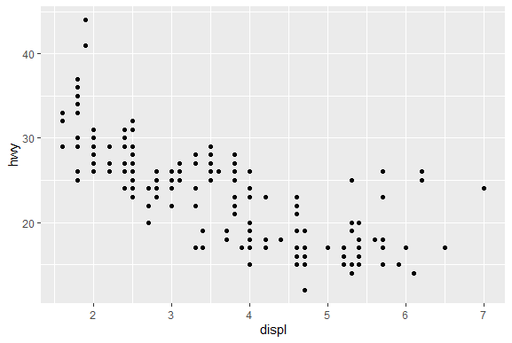
Razona:
Prueba a hacer lo mismo, pero representando el gasto en carretera vs. el gasto en ciudad. ¿Qué observas?
Respuesta
1 2 | |
El gasto de combustible, tanto en carretera como en ciudad, sigue una clara tendencia lineal.
Aesthetics
El comando aes(), además de para introducir las variables principales (x e y), sirve para introducir otras variables y modificar de qué forma se van a ver en la gráfica. Ilustrándonos con el ejemplo anterior, podemos ver cómo la gráfica nos muestra la relación que existe entre el consumo de un determinado vehículo y su cilindrada. Si quisiéramos observar la relación que tienen estos resultados con la variable class (el tipo de coche), podemos introducirla dentro del comando aes() como propiedad visual.
Representamos la clase de coche dentro de la gráfica anterior cambiando el color de los puntos de la siguiente forma:
1 2 | |

Como vemos, además de representar el gasto en carretera con respecto a la cilindrada, vemos con cada color cada tipo de coche que hay, revelando información extra.
Razona:
Observando el ejemplo anterior, ¿a qué conclusión puedes llegar en relación al tipo de vehículo, su gasto en carretera y su cilindrada?
Respuesta:
Los coches, por norma general, gastan más en carretera conforme aumenta su cilindrada. Sin embargo, en este ejemplo existe un grupo de coches que no sigue esta suposición. Al observar la variable que determina el tipo de coche en la gráfica, vemos como estos vehículos son de dos asientos, que, al pesar menos, gastan menos combustible que los demás, independientemente del tamaño del motor.
Podemos mapear cualquier variable dentro del gráfico incluyéndola en aes(). Además, podemos elegir que propiedad visual asignar a esta (color, tamaño de los puntos...). Podemos representar el tipo de vehículos cambiando el tamaño de los puntos (con size):
1 2 | |
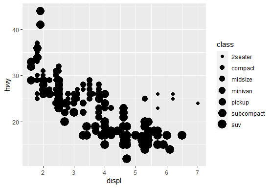
También podemos cambiar su transparencia (con alpha):
1 2 | |
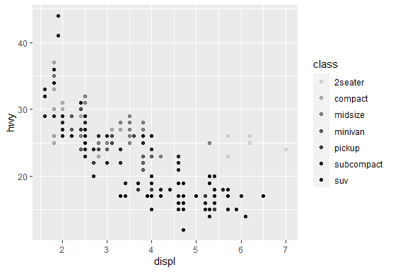
E incluso la forma de los puntos (con shape):
1 2 | |
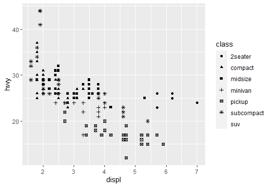
Estos ejemplos, sin embargo, muestran una serie de problemas. En los dos primeros se dificulta la visión de algunos puntos, mientras que en el tercero ggplot2 únicamente representa seis formas de puntos, que son fácilmente diferenciables entre sí. Cuando el número de valores es mayor a seis, se dejan de representar algunas de estos.
Estos aesthetics, por tanto, solo se emplean en casos muy específicos.
Razona:
Sobre los ejemplos anteriores, ¿cómo podrías diseñar otras gráficas empleando diferentes aesthetics?
Pista:
Puedes mirar todos los aesthetics posibles para el diagrama de dispersión usando ?geom_point.
Una cosa muy importante para tener en cuenta es que aes() solo sirve para modificar las gráficas con respecto a una variable. También podemos modificarla sin tener en cuenta los valores. Por ejemplo, podemos cambiar el color de todos los puntos sacando
color del comando aes():
1 2 | |
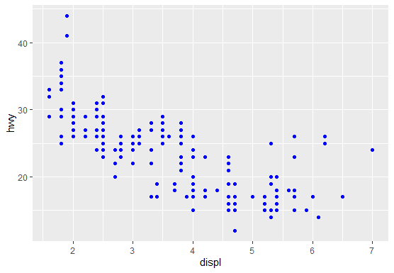
Si introdujésemos color = "blue" dentro de aes() se muestra una gráfica sin sentido, pues ggplot2 interpreta que no existe ninguna variable llamada blue:
1 2 | |
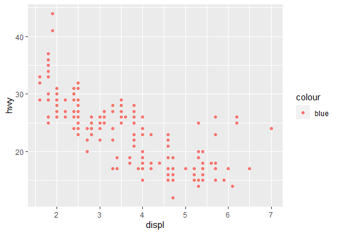
Diseña un diagrama de dispersión que represente la cilindrada vs. el gasto en ciudad
Respuesta
1 2 | |
Sobre la gráfica del ejercicio anterior, cambia la forma de los puntos por cuadrados (shape = 15) y representa el tipo de combustible según el color.
Respuesta
1 2 | |
En el ejemplo anterior, ¿cómo modificarías la gráfica de forma que represente aquellos vehículos con una cilindrada menor que 5 de un color y aquellos con cilindrada mayor de otro?
Pista:
Trata de usar color = displ < 5.
Respuesta
1 2 | |
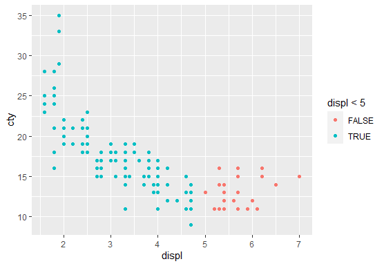
Gráficos estadísticos
Son gráficos estadísticos aquellos que representan datos cuantitativos. Entre ellos encontramos los gráficos de dispersión (ya estudiados), diagramas de barras, diagramas de cajas, histogramas, etc. Para estudiar estos gráficos vamos a usar un nuevo conjunto de datos denominado "diamonds", incluido en ggplot2, que contiene características estudiadas sobre un gran número de diamantes.
Nota
Puedes encontrar toda la información sobre este dataset (variables, descripciones, etc.) empleando el comando ?diamonds.
Empecemos estudiando los gráficos de barras. Para ello, usamos el comando geom_bar(), de la misma forma que con los gráficos de dispersión.
Imaginemos que queremos clasificar los diamantes según la calidad del corte (variable cut). Para ello, usamos:
1 2 | |
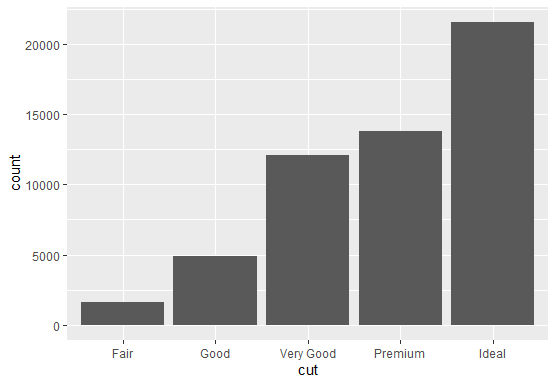
ggplot2 interpreta automáticamente que, al no concretar la variable y, debe representar el número total de diamantes por calidad de corte. Para ello, ggplot2 emplea unas transformaciones estadísticas capaces de crear nuevas variables modificando las ya existentes. En este caso, lo que hace es contar el número de diamantes dentro de cada tipo de corte.
Nota
Si quieres saber más sobre estas transformaciones estadísticas, puedes encontrar más información aquí.
Al igual que el resto de gráficas, empleando aes() puedes modificar a apariencia del gráfico de barras:
colorcambia el color del borde de las barrasfillcambia el color del relleno
Por ejemplo, podemos representar la claridad de los diamantes (variable ```clarity````) de la siguiente forma:
1 2 | |
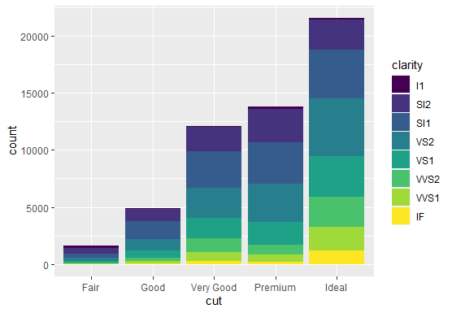
También podemos representar diagramas de cajas, empleando la función geom_box. Como ejemplo, podemos representar el gasto en carretera según el tipo de coche de la siguiente manera:
1 2 | |
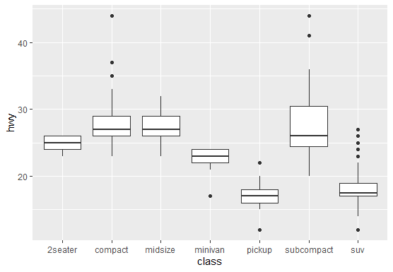
Si necesitamos girar la gráfica, simplemente añadimos coord_flip() justo a continuación de nuestra gráfica:
1 2 3 | |
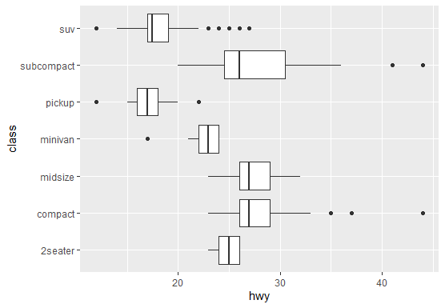
Razona:
¿A qué conclusión puedes llegar observando el ejemplo anterior?
Gráficas múltiples
A veces, para facilitar la visualización de los datos, se intentan representar varias gráficas a la vez. Para ello, existen dos formas:
- Representar muchas variables dentro de una misma gráfica (por capas).
- Dividir los datos en varias ventanas (facets).
Gráficas por capas
ggplot2 permite representar muchas variables en una misma gráfica de forma sencilla.
Supongamos que necesitamos representar una línea de tendencia del gasto en carretera con respecto a la cilindrada. Usando geom_smooth() dibujamos una línea de tendencia suavizada del conjunto de datos propuesto:
1 2 | |
Nota
Al igual que con el resto de funciones geom, geom_smooth() también posee sus aesthetics específicos (tipo, grosor, color de línea...). Puedes usar ?geom_smooth para ver los que hay disponibles.
Si quisiéramos representar esta línea como una capa sobre un diagrama de dispersión, simplemente escribimos sus respectivas funciones geom una después de la otra:
1 2 3 | |
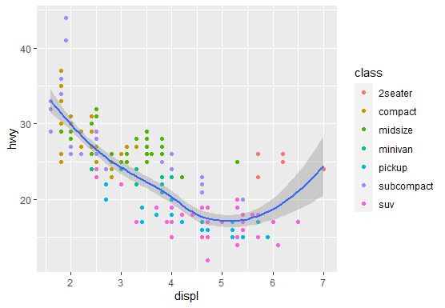
Podemos combinar tantas capas como queramos, siempre y cuando no existan incoherencias entre las variables representadas.
Gráficas por ventanas (facets)
Imaginemos que queremos representar el gasto en carretera con respecto a la cilindrada. Imaginemos también que queremos representar los tipos de vehículos. Podemos hacer como hicimos antes, es decir, representar por colores. Esto, sin embargo, a veces puede resultar en gráficas difíciles de observar, pues es complicado distinguir los diferentes valores.
Para solucionar esto, podemos representar muchas gráficas a la vez, dividiendo las variables en numerosas ventanas. Para ello, usamos facet_wrap(). Se usa de la siguiente forma:
1 2 3 | |
1 2 3 | |
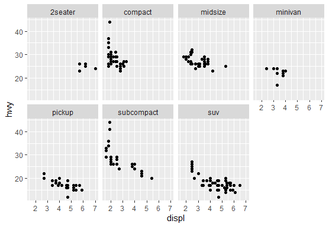
Con facets podemos representar dos variables, empleando la función facet_grid(). Por ejemplo, usemos como variables el tipo de tren de transmisión y el número de cilindros:
1 2 3 | |
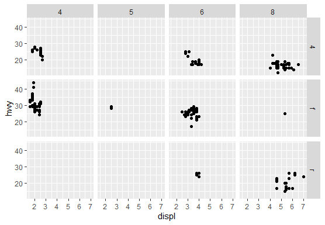
Los facets son muy útiles cuando queremos ver una visión global de todas las posibles representaciones que podemos hacer. Con ella, vemos multitud de gráficas a la vez y podemos seleccionar la que más nos interese.
Ejercicios
Ejercicios de repaso
Para ver si has entendido todo, intenta realizar estos ejercicios propuestos. Para saber cómo hacerlos, visita el apartado de "Realización de ejercicios". Tras esto, ejecuta el siguiente comando:
1 | |